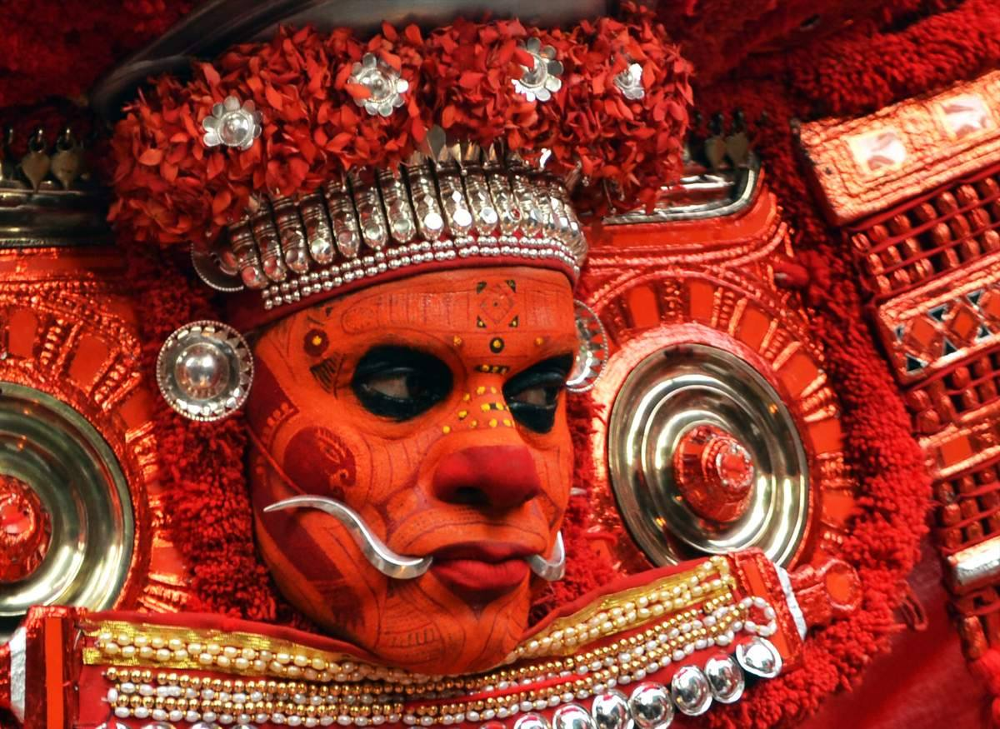

THEYYAM

Theyyam (/t̪eːjjəm/; romanised: teyyam) are Hindu ritualistic dance forms practiced in northern Kerala and some parts of Karnataka. Theyyam is also known as Kaḷiyāṭṭaṁ or Tiṟa. Theyyam consists of traditions, rituals and customs associated with temples and sacred groves of Malabar.[1] The people of the region consider Theyyam itself as a channel to a god and they thus seek blessings from Theyyam..
More